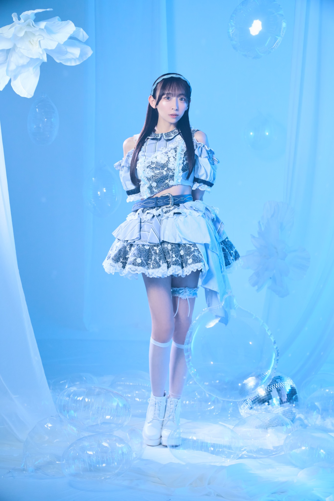
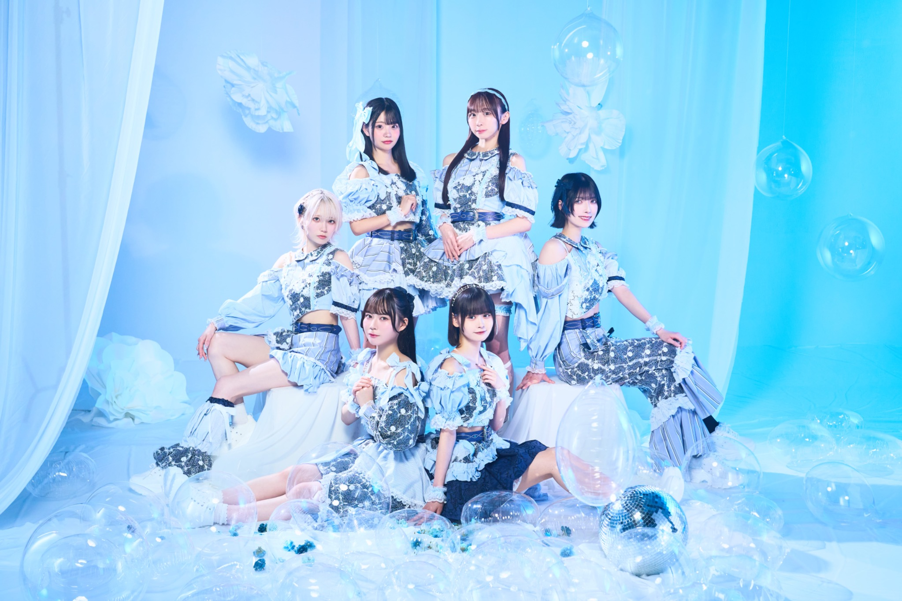
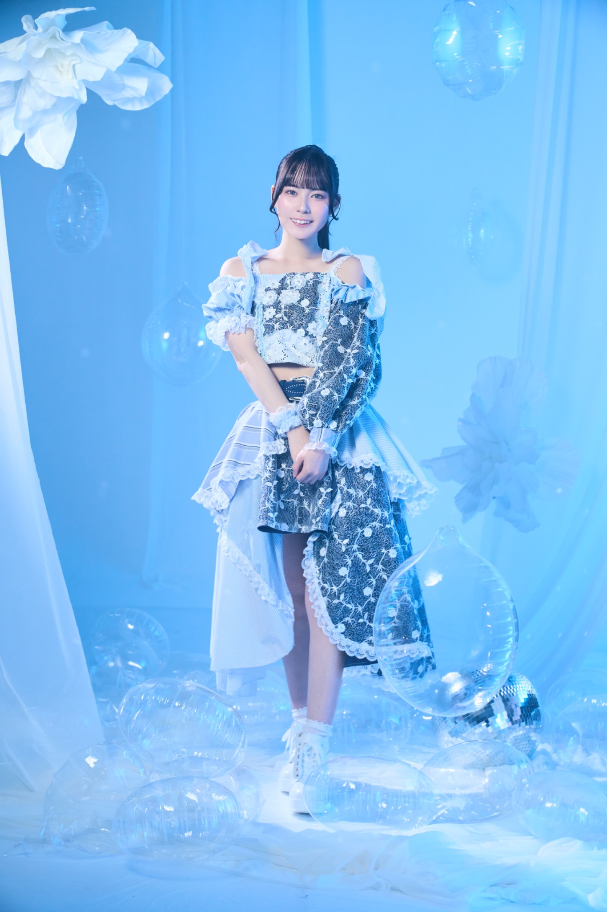
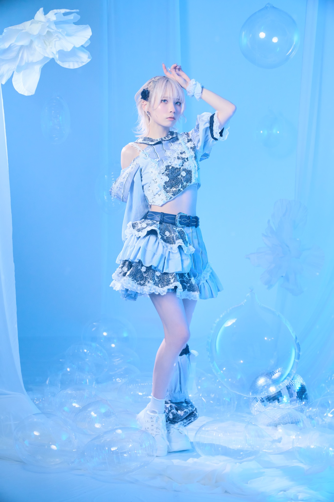
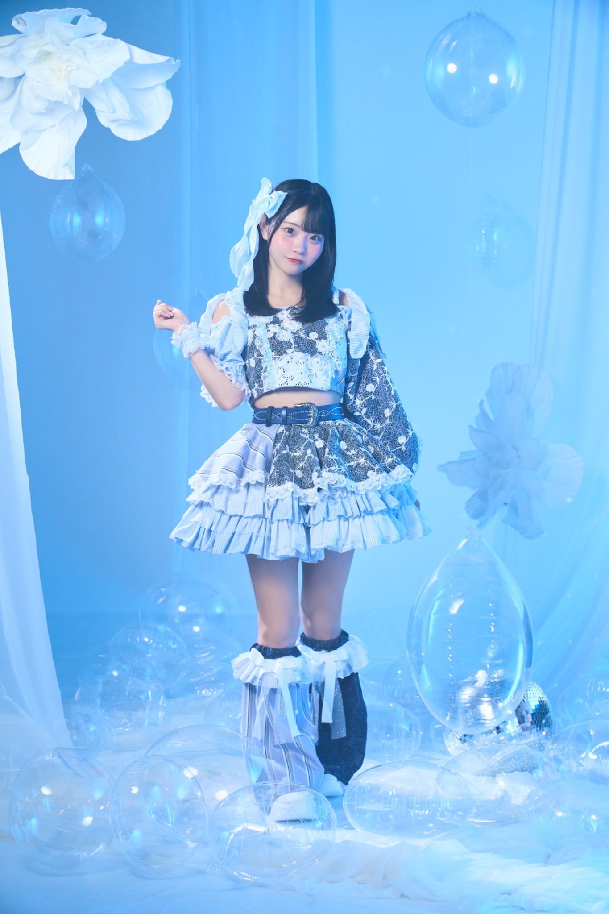
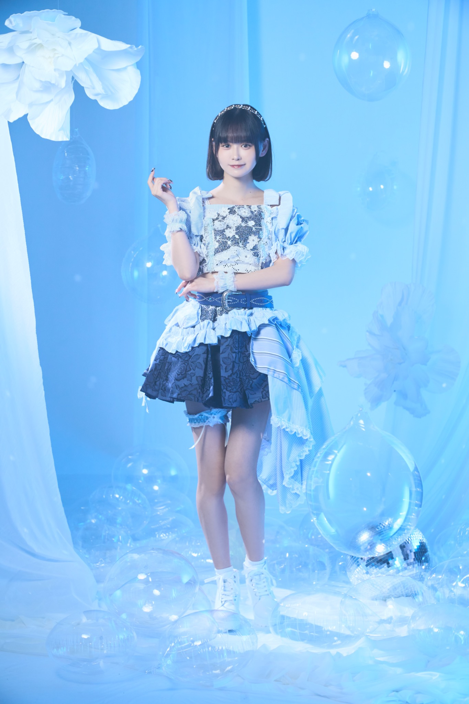

Tohkei
ABOUT / MEMBER
グループ概要・メンバープロフィール
TOP / ABOUT / MEMBER
Tohkeiとは

Tohkei（トウケイ／倒景）は、東京を拠点に活動する6人組グループ。
「今を生きる」をコンセプトに日常を彩るテーマソングを歌います。
倒景(とうけい)という単語には水面に映る逆さまの影という意味があり、水たまりから大海原まで、どんな時も誰にも寄り添うものでありたいという思いが込められている。
MEMBER
メンバー紹介



CONTACT
お気軽にお問い合わせください。
お問い合わせ